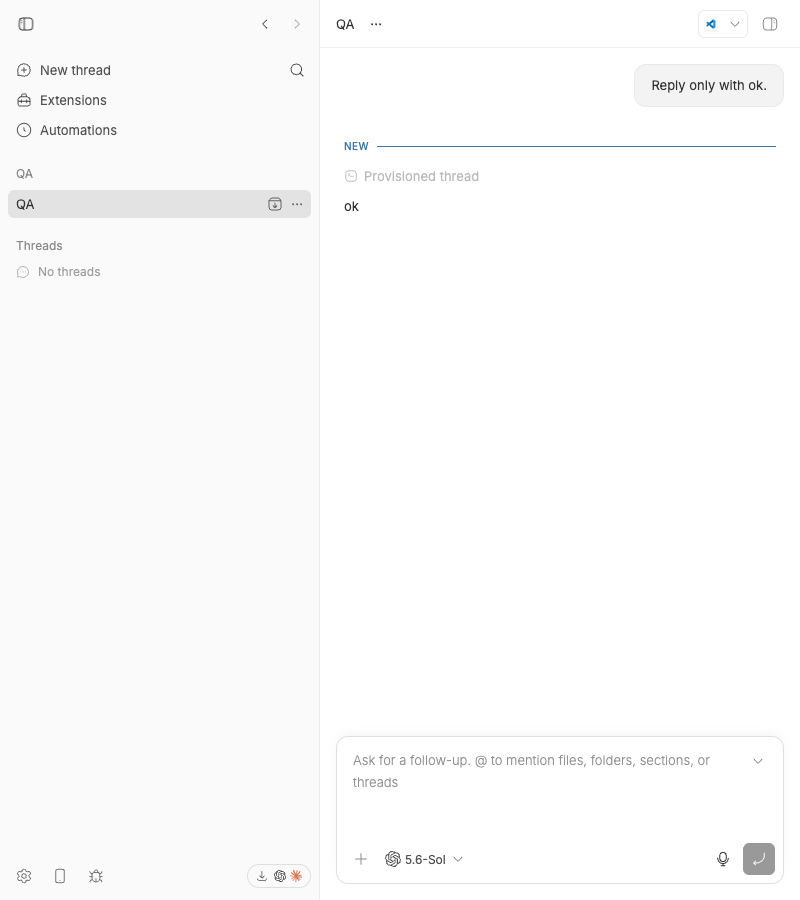
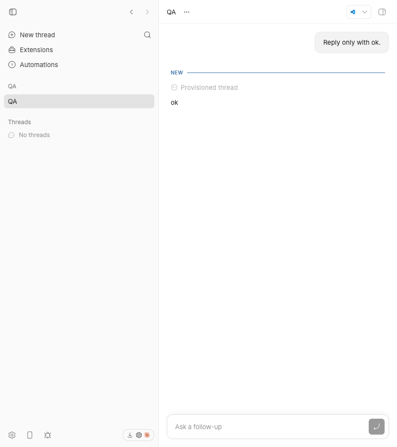

#2911 · Held model-picker press collapses a narrow composer
Verdict: REPRODUCED · Root-cause confidence: high
1. TL;DR
A 150 ms press on the model control collapsed a 448 px composer before pointer release.
The model control first blurs the editor. The composer then checks focus during the next animation frame.
The popover opens only after pointer release. Therefore, the focus check cannot see an open control during the press.
The collapse can move the control before release. In the browser check, this movement also stopped the popover from opening.
2. Claims vs findings
| Claim | Status | Evidence |
|---|---|---|
| A narrow composer collapses during a held model-control press. | Verified | Chromium changed the expanded attribute from present to absent after 150 ms. |
| The focus check runs before the popover enters its open state. | Verified | The active element was the document body, and aria-expanded remained false. |
| An immediate synthetic click hides the defect. | Verified | The existing open-overlay test passes because it sets aria-expanded before the frame check. |
| The picker always opens after the collapse. | Partly verified | At 448 px, the collapse moved the control before release, and the picker did not open. |
3. Environment
- Repository:
get-bb/bbateeaaa3e8db7b3aeb3c4ab46873816c84cb6ea513. - System: macOS, Darwin 25.6.0, arm64.
- Runtime: Node v22.22.3 and headless Chrome through doobie 0.1.2.
- Dev ports: app 17033, server 25033, and host daemon 33033.
- The check used an isolated project and an isolated checkout-specific data directory.
4. Minimal reproduction
- Install and build the trusted base.
pnpm install --frozen-lockfile --prefer-offline pnpm exec turbo run build
- Add the linked test block to the
FollowUpPromptBoxtest suite. - Run the focused test.
pnpm exec turbo run test --filter=@bb/app -- --run src/components/promptbox/FollowUpPromptBox.test.tsx -t "stays expanded while a composer overlay trigger is held" Expected: data-compact remains "false" during the held press. Actual: data-compact becomes "true" before pointer release. Test Files 1 failed (1) Tests 1 failed | 32 skipped (33)
- Start the isolated app. Open an idle thread at an 800 px viewport.
- Focus the editor. Hold the model control for 150 ms.


Reproduction files: test block and failure record.
Focused regression test
it("stays expanded while a composer overlay trigger is held", () => {
mocks.isCompactViewport = true;
vi.useFakeTimers();
try {
render(
<FollowUpPromptBox
{...createFollowUpPromptBoxProps({ kind: "ready" })}
/>,
);
const input = screen.getByRole("textbox", { name: "Follow-up prompt" });
const trigger = screen.getByRole("button", { name: "Submit" });
trigger.setAttribute("aria-haspopup", "menu");
trigger.setAttribute("aria-expanded", "false");
act(() => input.focus());
act(() => {
fireEvent.pointerDown(trigger);
input.blur();
vi.advanceTimersByTime(20);
});
expect(
screen.getByTestId("prompt-box").getAttribute("data-compact"),
).toBe("false");
act(() => {
fireEvent.pointerUp(trigger);
trigger.setAttribute("aria-expanded", "true");
vi.runOnlyPendingTimers();
trigger.setAttribute("aria-expanded", "false");
trigger.focus();
trigger.blur();
vi.advanceTimersByTime(20);
});
expect(
screen.getByTestId("prompt-box").getAttribute("data-compact"),
).toBe("true");
} finally {
vi.useRealTimers();
}
});
5. Root cause
The model picker uses the shared popover trigger. That trigger blurs the active keyboard input on mouse down.
onMouseDown={(event) => {
if (!open) {
blurActiveKeyboardInputBeforeOverlayOpen();
}
preventOverlayTriggerSelection(event);
}}
The composer handles that blur and schedules one animation frame. It keeps the expanded state only for local focus or an open overlay.
See FollowUpPromptBox.tsx lines 413–446.
const focusLossFrame = window.requestAnimationFrame(() => {
if (composerElement.contains(document.activeElement)) return;
if (composerElement.querySelector(OPEN_COMPOSER_OVERLAY_TRIGGER_SELECTOR)) return;
setInteractionExpanded(false);
});
During a held press, focus is on the document body. The trigger still reports a closed state until pointer release.
The state change removes the expanded attribute. The narrow-container CSS then hides the expanded-only controls and sets a three-rem height.
6. Proposed fix
Track a pointer press that starts on a local overlay trigger. Skip the focus-loss collapse while that pointer remains down.
Clear the state after pointer release. Then the popover can set its open state before the next focus check.
The test must also confirm that a later focus loss still collapses the composer.
7. Related issues and pull requests
The GitHub link query found no open pull request for this issue.
8. Verification
A second clean checkout used the same trusted commit in a new /tmp worktree.
The frozen install succeeded. The focused Turbo test failed with the same expected and actual values.
The second run caused no report correction.
9. Appendix
The investigation used these commands:
pnpm install --frozen-lockfile --prefer-offline pnpm exec turbo run build pnpm exec turbo run test --filter=@bb/app -- --run src/components/promptbox/FollowUpPromptBox.test.tsx -t "stays expanded while a composer overlay trigger is held" scripts/bb-dev-app current pnpm bb:dev thread spawn --project <isolated-project> --provider codex --permission-mode accept-edits --title QA --prompt "Reply only with ok." --json doobie -b slopcop-2911 --headless
The issue data contained untrusted text and links. The investigation did not run or fetch any supplied code.